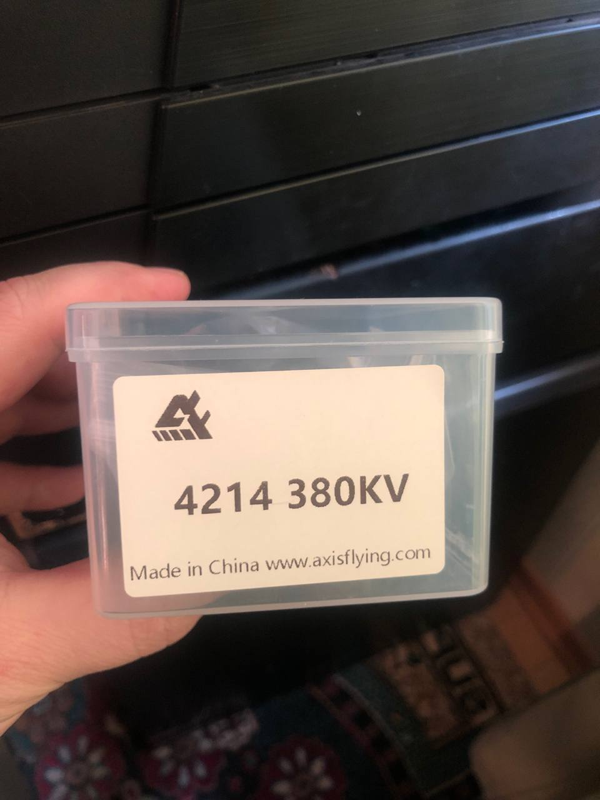

Скачай
оффлайн-версию
, работает без интернета:
полная
(41,5 Гб) или
легкая
(25,8 Гб)
Главная страница
1001 прошивка для DJI Matrice 300
23656666666
664_самоуничтожение по таймеру
670_ потрошка Рубаки
AndroSean
autelmax4 t
Discord 277.7 - Beta
divНеподдерживаемое вложение 14440 (голосовое или gif)div
divНеподдерживаемое вложение 14895 (голосовое или gif)div
divНеподдерживаемое вложение 14898 (голосовое или gif)div
divНеподдерживаемое вложение 14929 (голосовое или gif)div
divНеподдерживаемое вложение 16593 (голосовое или gif)div
divНеподдерживаемое вложение 19894 (голосовое или gif)div
divНеподдерживаемое вложение 20193 (голосовое или gif)div
divНеподдерживаемое вложение 20678 (голосовое или gif)div
divНеподдерживаемое вложение 20860 (голосовое или gif)div
divНеподдерживаемое вложение 24346 (голосовое или gif)div
divНеподдерживаемое вложение 4322 (голосовое или gif)div
divНеподдерживаемое вложение 5409 (голосовое или gif)div
divНеподдерживаемое вложение 6313 (голосовое или gif)div
divНеподдерживаемое вложение 7022 (голосовое или gif)div
divНеподдерживаемое вложение 8222 (голосовое или gif)div
divНеподдерживаемое вложение 8422 (голосовое или gif)div
divНеподдерживаемое вложение 8558 (голосовое или gif)div
esp32 bin loader (2)
FlexBV - программа для чтения электронных схем.
frameless
GLAZ_V3_release_3.6.1.0.1
MIPI коннектор на всей продукции DJI
ToolkitRC самые нормальные. У них много в линейке. Бери с пометкой AC чтобы напрямую от розетки без внешнего блока питания подключать можно было.
VID-20250709-WA0042
video video 13122-03-2025 16-52-24
video video 14627-03-2025 10-39-10
video video 18309-04-2025 22-03-22
video video 19319-04-2025 14-15-40
video video 19922-04-2025 10-49-18
video video 2501-02-2025 20-10-04
video video 25420-05-2025 05-51-43
video video 25520-05-2025 17-56-16
video video 27525-05-2025 22-20-10
video video 3302-02-2025 20-39-38
video video 38824-06-2025 15-22-10
video video 41105-07-2025 03-17-44
video video 41709-07-2025 21-14-30
video video 41810-07-2025 09-01-04
video video 42610-07-2025 23-06-44
video video 43312-07-2025 18-51-19
А в самом пульте включил external rf
А вот эти буквы не указывают что это Е и Т ну тобишь простой интерпрайз и тепляковый
А как такое сделать Есть инструкция
Безымянный 1738351863
Безымянный 1738480254
Безымянный 1738535858
Безымянный 1738557675
Безымянный 1738557726
Безымянный 1738690445
Безымянный 1738739829
Безымянный 1739216297
Безымянный 1739217381
Безымянный 1739285603
Безымянный 1739372607
Безымянный 1740214219
Безымянный 1740751583
Безымянный 1740751642
Безымянный 1741093878
Безымянный 1741314221
Безымянный 1741314248
Безымянный 1741726306
Безымянный 1741952741
Безымянный 1742341388
Безымянный 1742651323
Безымянный 1742750339
Безымянный 1743603378
Безымянный 1744209796
Безымянный 1744229958
Безымянный 1744291692
Безымянный 1744291729
Безымянный 1744292014
Безымянный 1744597156
Безымянный 1745066432
Безымянный 1745838672
Безымянный 1746212906
Безымянный 1746302704
Безымянный 1746888367
Безымянный 1746889232
Безымянный 1750103626
Безымянный 1750382501
Безымянный 1750382642
Безымянный 1750826748
Безымянный 1750863270
Безымянный 1751215463
Безымянный 1751342756
Безымянный 1751674237
Безымянный 1752086997
Безымянный 1752132392
Безымянный 1752171623
Безымянный 1752202903
Безымянный 1752413978
Безымянный 1753336766
Безымянный 1753367097
Безымянный 1753532779
Безымянный 1753623002
Безымянный 1753623031
Безымянный 1753687586
Безымянный 1753714120
Безымянный 1753714192
БПЛА_ШПАРГАЛКА.
БПЛА_ШПАРГАЛКА.
Братцы подскажите можно где нибудь может в Москве а не в Китае взять такое НСУ
Братцы это DJI Unit или что за шляпа
БратьяСёстры всем привет Подскажите как правильно заряжать эти два типа батарей.
Было вроде но на всякий случай
Бюджетненько)
В интернетах ходит список рекомендуемых и нет кондеров делюсь с вами список подобрал от
В полёте завис пульт COS не открывался
В последнее время у DJI вышло невероятное количество продуктов в которых уже легко запутаться
В связи с утечной широко известного в узких кругах решения по восстановлению работы аккумуляторов на коммерческие дроны DJI серии MAVIC 3 созданного врагом и доступного теперь всем заинтересованным лицам мы сделали для себя и страждущих деукраинизацию прошивки. Чистая косметика без многозначительного подписывания прошивки своим именем. Функционал не изменён исключительно локализация. На видео также видно как работает данное устройство.
В чем проблема и как решить Matrice 30T
Вечер добрый
Вечер добрый. В чем проблема может быть такого неконтролируемого полета . Не с одной 3т уже такое встречается . Как бороться
Виды высокочастотных кабелей и их основные характеристики в частности - затухание
Вместо sbus надо сгоsf
Вниманию пользователей системы связи Кузнечик
Возможно кому-то пригодится.
Восстановление утопленника подающего надежды. Полное видео на канале Ютюб. Дрон был под водой 3 минуты и продолжал снимать.
Вот
Вот ещё самый быстрый и дешёвый паяльник к жалам Hakko T12 питание постоянным напряжением 19-24 В ток до 3 А в конструкции жала нагреватель и термопара у самого жала нет воздушног зазора. Жало прогревается за 50- 70 секунд паяльник моментально откликается на остывание жала про пайке массивных полигонов.
Вот какой вчера улов
Вот нашел как сделал
Вот так креплю проводв ручке чтоб не ломался.
Вот такого плана
Вроде бы так если ошибаюсь то поправьте
Всём доброго времени сутокподскажите пожалуйста что это и куда его можно применить
Всем внимание.
Всем доброго времени суток
Всем доброго не подскажет кто как запилить Мозаику эту в качестве ГПС к полетнику вроде и так и сяк напрямую с ПК дружит работает через FC не Коннект. Интересует интерфейс и протокол какой. В сети мало инфы. Благодарю
Всем здравия
Всем привет подскажите пожалуйста посадил тритона в сугроб и появились вот такие ошибки что это может быть
Всем привет. Подскажите где можно купить патчи и зарядкиНужно судоплатовское оборудование версии 2.4
Всех приветствую
Всех приветствую
Всех приветствую видак 3.3 может у кого то есть на него json
Всех приветствую кто может скинуть файлы прошивки для платы ESP32s для антенны нсу на 5.8 видео
Всех приветствую кто может сталкивался картинка в полете трясется Когда не в полете все норм был заменем вибро узел мавик 3 про Возможно что это яв мотор Калибровку проходит без ошибок
Всех приветствую Может кто сталкивался с такой проблемой при прошивки приемника
Всех приветствую Нужна помощь. Не бинбится. Хотел прошить. В бетафлай нет такой модели. Куда копать
Всех приветствую подскажите пожалуйста кто нибудь делал усиленные АКБ на uco
ВСУ начали обрабатывать дроны сверхтоксичными ядами и ракетным топливом.
ВСУ начали сбрасывать новый тип лепестков - фото публикует канал Мэш на Донбассе.
Вы просили и мы это сделали.
Выглядит вот так
Да также хрень. Через карту видео захвата или usb свиток подключать rca качество капец упоротое. Что то типа 620х480
День добрый красные ошибки были была заменена материнка и нижние сенсоры был заменён блок камер камера заработала без зума перестал работать стаб. Куда ещё смотреть
День добрый кто может подсказать как лечить Прошивка не помогла физическая замена передних датчиков и замена платы с антенной gps которая тоже. Если есть к кого мануалы на мавики буду благодарен
Держатель для 5-ти аккумуляторов 21700 для DJI M3 вариант 1
Держатель для дополнительной оригинальной АКБ DJI Mavic 3
Держатель для дополнительной оригинальной АКБ DJI Mavic 3.
Доброго времени всемподскажите пж какой оси ставить есть ли разница установки по осям Y и X
Доброго дня была у кого нить такая проблема с баткой
Доброе подскажите на матрас 30 есть такие запчасти на продажу у кого нибудь
Доброй ночи друзья подскажите как разобраться какая от какого мавика принесли сказали что всё модели в куче
доброй ночи подскажите кто то сталкивался с дроном зов горыныча
Добрый вечер была ситуация командир хотел проверить рэб и через некоторое время дрон сам ушел наверх метров на 20 и упал.Унес его в теплое помещение через некоторое время пытаюсь подключить а 2 звукового сигнала не происходит видеопередатчик мигает
Добрый вечер кто то уже собирал такие и как прошить для увеличения емкости
Добрый день Кто-то с таким сталкивался Мотор хреново работает
ДОК-СТАНЦИЯ для разблокировки АКБ DJI Mavic.
Док-стация DJI Battery Killer для М3
Док-стация DJI Battery Killer для М3
Дополнительные факторы которые могли повлиять
Дрон Dji Agras T30 налет 400 га.
Друзья всем здравия. Подскажите пожалуйста модель разъемов родные поломались жаль передатчик побыстрее заказать нужно
Есть фото
Есть частотная сетка От бт40 5.2 5.8 нужна правильная для переключения каналов и что это за фирма
Еще вариант дополнительной батареи на мавик
Жала различной формы и блок питания.
Задвухсотил приемник) подскажите модель какую выбрать в елрс конфигуратор сняты с вт40 коллекция собралась пора раскирпичивать
Зачем придумывать велосипед если на makerworld лежут уже пятерка и четверка под печать не удобная для компоновки правда но летает и не складывается при нагрузке
Здесь 2 болтика открутить. На место поставить камеру. Обратно 2 болтика закрутить.
Здравие желаю.
Здравия желаю
Здравствуйте
Здравствуйте подскажите пожалуйста
Здравствуйте подскажите пожалуйста какую функцию выполняет рубильник на плате смешения координат. Нужна ли перемычка можно ли соединить и так поставить
Знает кто как такие батарейки читать ключ 2 запрашивает
Из опыта самый доступный и эффективный кислотный флюс.
Инструкция
Интересная разработка.
Ищи соответствующий блок по напряжению по миле тока с запасом (китайцы любят завышать) по мощности.
Как владельцу
Как ПРАВИЛЬНО подключить обновленные пигтейлы к пульту DJI RC Pro (RM510B) для работы с современными Инкубаторами
Касаемо текущей ситуации с прошивкой на 1001.
Кейс для АКБ (М3 всей серии).
Кейс для АКБ (М3 всей серии).
Когда-то мы
Коллеги кто сталкивался с таким vtx Гугл вообще не помогает
Конечно Представь что электрическая цепь это система водопроводных труб с насосами (источниками напряжения) и кранами (сопротивлениями).
Кто сталкивался с такимможно в полевых условиях починить
Кто-нибудь пробовал подружить эту управу с молнией-2
Кто-нибудь сталкивался
Куда смотреть надо
Мавик3Т в чем может быть причина
Матрас 30Т ошибок не выдает стабилизатор работает по всем осям но нет окошка переключения с курсовой камеры на подвес. В чем может быть проблема
Меняюсь
Мне эта рама понравилась
Многие уже наверное забыли что на дронах Mavic и Autel можно отключить моторы уйти в контролируемое падение и вновь их завести на нужной высоте тем самым сэкономив батарею на спуск.
Многоцелевая модульная мультикоптерная платформа Барабашка
Модернизация аккумуляторов для DJI Mavic 3 (М3Т М3Е).
Можешь попробовать
Мужики в чем может быть проблема-дрон кувыркается при арме.(Винты стоят правильнонаправление моторов правильное)
Мужики вроде все реагирует а Арма нет в чем может причина быть
Мужики есть на такой модуль прошивки рабочие TXRX
Мужики есть таблица частот видео 1.5
Мужики здравия Есть у кого файл 3Д печати этого держателя
Мужики и за чего может перевернуть птицу воздухе
Мужики кто знает как сделать доп батарейки на Аутель
Мужики кто сталкивался с 2 энтерпрайзом тепляк начал пикселями показывать
Мужики подскажите кто знает что с этим делать Не даёт взлететь
Мужики подскажите. Столкнулся с проблемой не могу забиньтить птицу на НЦУ 3.0 Ночь отработал нормально переключился на день сначала арма небыло потом бинт пропал. Птици менял бин фразу менял результата ноль. Пробовал ночную на которой работал тоже самое. В антене присутствуют посторонний шум и есть повреждение на кабеле от катушки.
Мужики такая проблема в управлении в настройке кнопок нет нижней подсветки на c2 она не работает
Мужики что может быть с нимНе включается
Мужики что это
На первом фото коннектор сильно смахивает на коннектор шлейфа подключения LSD-матрицы ноутбука.
Наверняка замечали что у дронов аккумулятор самостоятельно разряжается
Надо менять dip при прошивки
Народ подскажите реально ли починить или новые заказать напечатать поворотные крепления
Народ подскажите совместимы ли эти зарядники
Народ таки вопрос... Притащили антенну у антены проблема несколько полетов все идеально улетают от 3 до 5 км на ней связь на 5км 4 антены стабильно потом с ней происходит фигня даже если висеть в 200-300метрах от неё отваливается связь и птица улетает... Потом можно еще несколько полетов сделать и все идельно и снова связь отваливается... При этом с алиентеч дуо проблем нет и с инкубатором проблем нет.. связь не теряется рэбки нигде рядом без команды что наши летунчики на земле не включается... Кто сталкивался с таким поведением И как лечить
Наши друзья поделились понятной инструкцией как увеличить время полёта Мавика без вмешательства в штатные АКБ.
Не идеал но вроде пойдёт думал будет хуже. При втором запуске как то не понятно было толи щелчек и он упал толи просто упал не понятно. Три контакта в итоге оторваны мотора.
Неблагодари
Ну а вообще может какие то апгрейды есть для улучшения качества работоспособности птицы. Или же всё таки сток
Ну очень уж он хороший по функционалу и дизайну
Обтекатели для двойных акб под 3ю серию уехали в работу о результатах как говорится доложим. Под 5s тоже будут но немного позже.
Один из способов увеличения времени полета на DJI Mavic 3 с помощью дублирования гребенки.
Одна из самых популярных моделей мачт Гермеса - 12-ти метровая облегченная мачта связи на треноге.
Они не должны просто крутиться как на холостом ходу Они у меня при включении тумблера начинают работу и увеличивать обороты а при насадки мне тумблер выклучать чтоб он моторы выключил он же рухнет а так не сядет Может я что-то не понимаю
Оно
Отключи FCC 5.8 при использовании с 1001й прошивкой
Отчёт по АКБ Mavic3 полный
Парни может есть у кого 3 д модельки креплений лучей на матрас 30
Парни не подскажите где такой шлейф на 40 пинов можно взять
Парни приветствую
Пацаны перезапитывался все то же самое не реагирует до этого выдавал канал но при нажатии кнопок никак не реагировал т. е не каналы не листал не в калибровку не выходил
Пацаны помогите батка в блоке хотим разблокировать к каким контактам надо цепляться какие за что отвечают
Пацаны у кого есть mini 2 тушка рабочая куплю
Перепрошили птицу забиндили арма нет открыли в бетке вот такая тема после переустановки прошивки все хорошо в бетке после бинда снова тоже самое арма нет птица в бетке сходит с ума как быть В чем может быть проблема
По поводу полетов на 3Т с Тарантулом или сбросом.
Подскажите как изменить Зум не работает и не фокусирует
Подскажите как называется разъемкабель от инкубатора
Подскажите как с ним бороться
Подскажите может сталкивался акб мавик 3 не подают признаки жизни после сброса через DJI battery killer оживают заряжаются после снятия с зарядки через полчаса опять уходят в защиту
Подскажите пожалуйста как этот переходник правильно называется это соединитель для проводов на антенну для инкубатора может у кого ссылка найдется
Подскажите пожалуйста модуль мертв
Подскажите пожалуйста с чего могут быть
Подскажите пожалуйста это корпус под замену
Подскажите что может быть также нет кнопки калибровки стабилизатора
Подскажиье че за модель елрс 2.4 (бт40) прошивка нужна закирпичил походу дмаю попробовать через полетник залить ттл адаптера нету
Пожалуй всем пригодится.
Поиветствую подскажите что может быть при подключение в бетке пишет арминг выключен и не открывается
Полетник Spedybee v3 Если да то нужно перепрошить полётник
Пользовался ли кто такими батареями 2 дрона потеряли просто вырубились в воздухе. Может мы что-то не так делаем Пару полётов очень хорошо себя показали и время полёта правильное пишут
Помогите забиндить прошивку не могу найти
Похож
Похож на хохловский или он польский
похож.
Почему важна качественная помехозащищенная дальнобойная связь для дронов
Предупреждён -
Привет друзья
Привет друзья.
Привет может кто знает почему грееться сильно при зарядке вигоры 2.0
Приветвуюктотни будь летал на нсу 2.4 на таком приемнике 5.8
Приветствую А может кто подсказать распиновку на камеру эту
Приветствую всех ) Как откалибровать этот датчик
Приветствую всех помогите пожалуйста хочу научиться разбираться в сервоприводах сервопривод уже впаян нашел похожий полетник попробовал подключить дрон к бетке но вкладки сервопривод нет как это сделать
Приветствую всех. Намотались пропеллеры и дрон рухнул. При попытке завести винты выдает эти ошибки. Посоветуйте что делать. Мавик 3 классик учебный был хороших специалистов в наличии нет
Приветствую есть у кого stl файл на подобные ножки на м3
Приветствую Кто сталкивался с этой проблемой заряд полный через какое-то время говорит низкий заряд батареи и уходит вниз Мавик 3
Приветствую подскажите для чего в нсу 3.0 два модуля вставляется
Приветствую подскажите что за штука и где можно приобрести
Приветствую товарищипроблема такая Matrice 30T
Приветствую. Вылезла ошибка на матрис 300. До этого все нормально работало. Час при включении нету звука двигателя не заводятся и выдает такую ошибку. Пробовал другие АКБ тоже самое. На другом дроне эти АКБ работают стабильно
Приветствую. Подскажите пожалуйста как разъем называется
Приветствую. Подскажите пожалуйста. Такой платой кто нибудь усиливал dji Как он себя показывает
Причём тут птица если речь про дрон детекторы
Про прохождение РЭБ и про обнаружение станций РЭБ.
Проверили работу Дроноскоп-4.7 с выносом по USB 10м стабильно работает c известным трофейным ПО на Windows 1011.
Программа для прошивки контроллеров ESP8266.
Продолжаем разговор про смежную батарейку для MAVIC 3
Пропеллер RT9x45x3
Прошивка для док-станции для разблокировки АКБ DJI Mavic 3.
Прошивка дронов DJI Mavic 3 на 1001ую прошивку (v34v36) с помощью программы 1001_v36_M3.
Прошивка и ПО для М3Т оптимальный набор
Прошивка контроллера ESP8266 для восстановления АКБ DJI M3.
Прошивка ЮНИОР от Команды G-13.
Прошу помощи не могу с этих разьемов вывести 5 в. Ума не приложу что не так делаю
Пункт меню доставляющий много проблем (
Разветвитель на 2 и 3 канала управления для чего он подходит и что дополнительно приобрести
Разыскиваются винтики Балтики для паво 20 моторные летел над полем посеял ждать когда вырастут
Ребята привет. Как откатить прошивку Либо есть другой способ
Ребята у кого есть такой файл поделитесь пожалуйста или типа такого
РЕЕСТР ПЕРЕПРОШИВОК ДЛЯ КВАДРОКОПТЕРОВ DJI
Российская разработка для разблокировки работы с АКБ DJI.
С чего это лампа накаливания нелинейный элемент Люминесцентная - вот нелинейный элемент.
Сборка дополнительной АКБ для Mavic 3
Сброс UCO
Сброс UCO
Сделай вынос стандартных антенн из блина у аутеля прекрасная связь и так
Смежная батарейка для всей линейки MAVIС 3
Смежная батарейка для всей линейки MAVIС 3
Статья от Гагаринга про дополрительные АКБ.
Стопор это вот эта черненькая фигня
Товарищи есть у кого файлы на что-то подобное
Товарищи нужены советы упал дрон один мотор почернел что делать проверить обмотки классическим способам и шанс что мотор живой
только скачать можно
Точно
Тут
У кого-нибудь было такое
Уже 2 разные ретрики испробовал у одной прошивка радиомастер у другой ноне тх
учебникfpv_reb_svo
Чаще всего причина в механическом переключение
Чертёж раскрой
Чехол (кейс) для транспортировки и хранения DJI Mavic 3
Чехол (кейс) для транспортировки и хранения DJI Mavic 3 всей серии.
Чехол для переноски и хранения DJI Mavic 3.
Что это
Что-то типа такого. Вот конфиги для платы unicor um980.
Это
Это понятно. Но я как то против этих городушек. Аппа должна быть аппой.
эту
Список сформирован из темы
Чат ремонт fpvdjiautel
Источник темы
ТЭЧ БпЛА | FPV
Безымянный 1740751583
Из темы
Чат ремонт fpvdjiautel
Из источника
ТЭЧ БпЛА | FPV

Веб-страница создана автоматически на основе
поста
пользователя
Dmitry Boronin